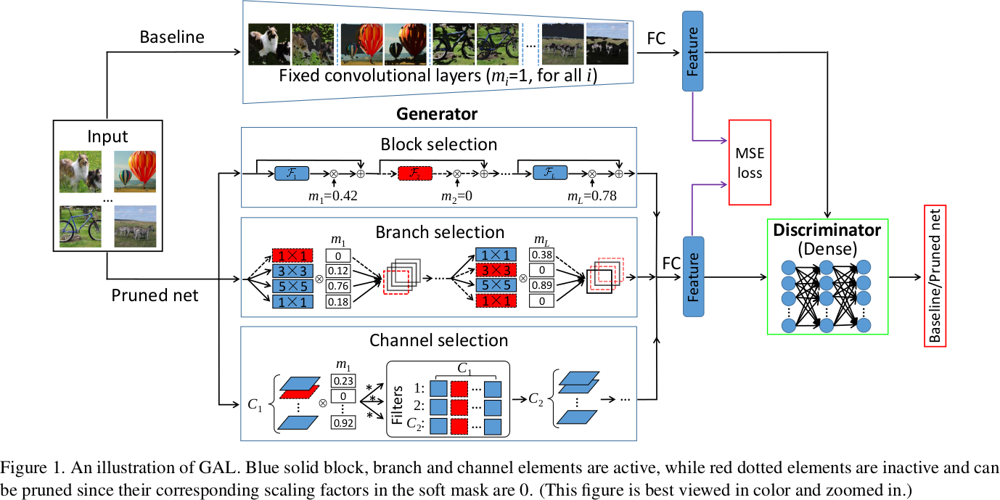
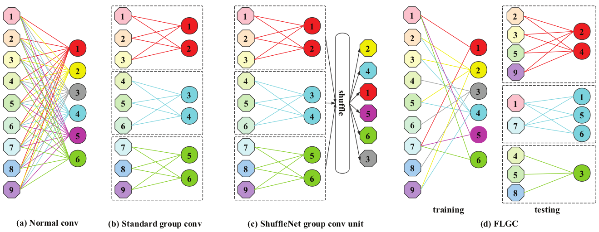
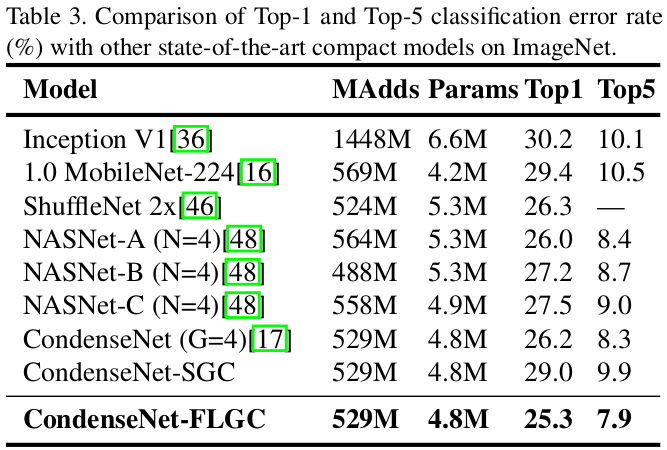
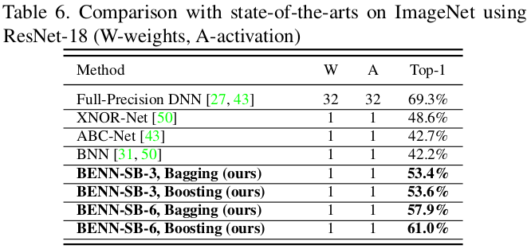
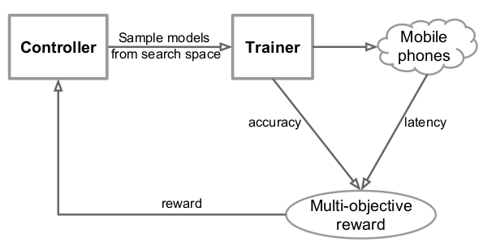
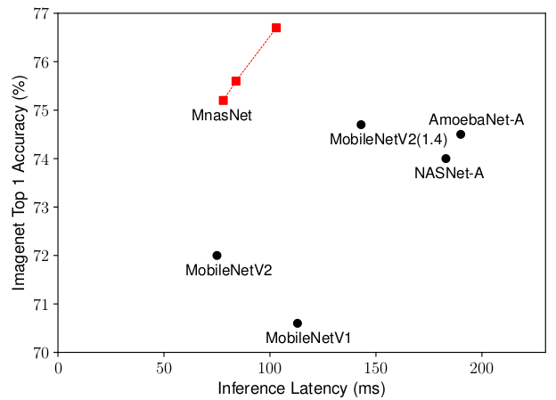
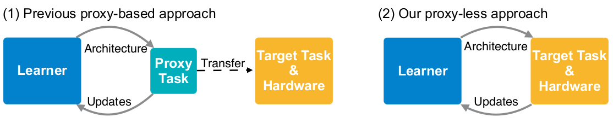
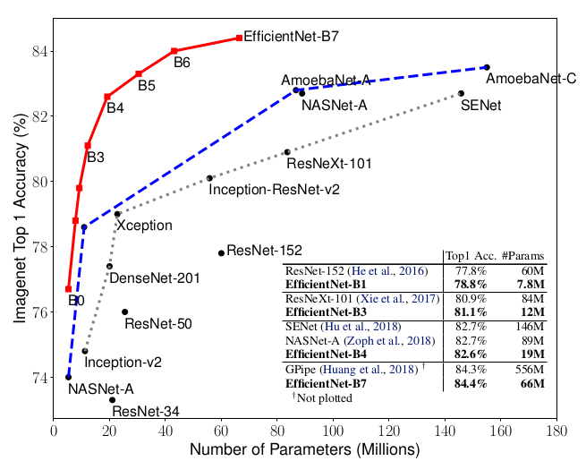
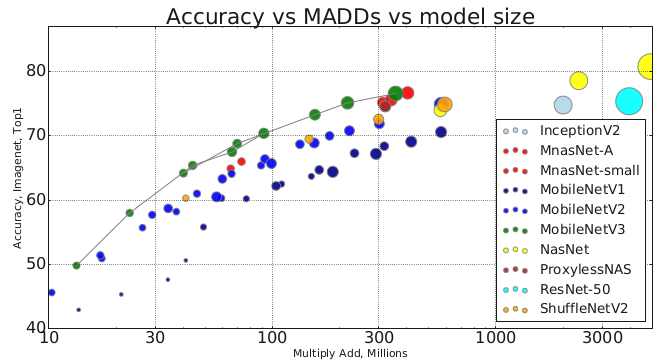

Quick read: methods of network compression in 2019
Overview
Let’s quickly go through the new models related to network compression published at CVPR 2019, ICLR 2019 and ICML 2019. Some works needs to be read and understood more carefully.
CVPR 2019
CVPR is more kind of tending to solve problems in practical applications, while ICLR and ICML are more close to theoretical explanations.
1. Exploiting Kernel Sparsity and Entropy for Interpretable CNN Compression[1]
-
Institutes: Xiamen University, Peng Cheng Laboratory (Shenzhen, China), Beihang University, Huawei Noahs Ark Lab, University of Buffalo and BestImage of Tencent Technology (Shanghai)
-
Notes
- Investigate CNN compression from a novel interpretable perspective. Discover that importance of feature maps depend on sparsity and richness (using the proposed Kernel sparsity and Entropy metric);
- Pruning in a feature-agnostic way, so that all layers can simultaneously be handled in parallel.
- Using Kernel Clustering to replace the common kernel pruning methods.
- Results
ResNet-50 4.7x FLOPs, 2.9x Size and a reduction of 0.35% Top-5 accuracy on ImageNet.
2. Towards Optimal Structured CNN Pruning via Generative Adversarial Learning[2]
- Institutes: Xiamen University, Beihang University, UCAS (China), BestImage of Tecent Technology (Shanghai), University of Buffalo (the same group as above)
- Notes
- Using GAN to guide filter pruning. Specifically, the
Generatoris used to generate pruned network, theDiscriminatoris used to judge whether the output is from the original network or the pruned network with the Objective function based on L1-regularization. - Label free due to no need of label information.
- Using a soft mask to build a generator.

- Results
ResNet-50 3.7x speedup and a reduction of 3.75% Top-5 accuracy on ImageNet. Not as good as the above one.
3. RePr: Improved Training of Convolutional Filters[3]
- Institutes: Brandeis University, Microsoft Research
- Notes
- They discover that no matter the size of network, even those small under-parameterized networks, the network would always tend to learn redundant filters, which suggests that filter redundancy is not solely a result of over-parameterization, but is also due to ineffective training;
- So the method of the work is to first train a network with standard training, then select a subset of the model’s filters to be temporarily dropped, continue training. After that, reintroduce the previously dropped filters which are initialized with new weights and train with standard training again. Do this several times, the performance would be improved than common standard training.
-
Therefore, the work also proposes a criterion to do filter selection (to select less useful filters).
-
I think it’s like dropout, to some extent the strategy proposed introduce a form of regularization to gain more generality. But my doubt is why giving up less useful filters and then reintroducing helps improving training? Perhaps when we reintroduce the filters and initialize them with new weights, it can increase the capacity of the subset which has already been trained. The new weights give a new opportunity to train a better model, because we gave up them when they were not useful. From this perspective, the proposed algorithm also seeks for better solution by initializing the reintroduced weights to make sure they are orthogonal to their value before being dropped and the current value of non-pruned filters, thus ensuring small redundancy.
4. Fully Learnable Group Convolution for Acceleration of Deep Neural Networks[4] (FLGC)
- Institutes: CAS, UCAS
- Notes
- The Introduction section does a really good recall and conclusion in the network compression literature. It’s worth reading while the recall seems has nothing to do with the main algorithms proposed.
- The main point of the paper is to propose a new strategy of
Group Convolution, which can be seen as an improvement of ShuffleNet. The difference is, for ShuffleNet, only the filters are not fixed (input channels connected to each filter are changed through channel shuffle, so it also means the filter is changed while the input channels are fixed) during group convolution, while for this paper, both input channels and filters are not fixed and each filter can connect to different number of input channels.

- Results

5. A Main/Subsidiary Network Framework for Simplifing Binary Networks[5]
- Institutes: Zhejiang University, Harvard University, UC (University of California, San Diego), UESTC (China)
- Notes
- The authors prove that even for
Binary Network, there exits redundancy. - So they prune Binary Network directly.
- Results
For binary ResNet-18 on ImageNet, the authors use 78.6% filters but can achieve slightly better test error 49.87% (50.02%-0.15%) than the original model.
6. Binary Ensemble Neural Network: More Bits per Network or More Networks per Bit?[6]
- Institutes: UC San Diego, Harvard University (the same group as above)
- Notes
- They prove why the Binary network suffer from sever accuracy degradation, especially when the activations are also binarized, through extensive experiments on representation power, bias, variance, stability and robustness, and think that the degradation are not likely to be resolved by solely improving the optimization techniques.
- Error of BNNs are predominantly caused by Intrinsic Instability and Non-robustness. Therefore, they propose a
Binary Ensemble Neural Network(BENN) to boost performance. - BENN is faster and more robust than the state-of-art binary networks and sometimes even more accurate than the full-precision floating number of network.
- Results

7. ESPNet v2: A light-weight, Power Efficient, and General Purpose Convolutional Neural Network[7]
-
Institutes: University of Washington, Allen Institute for AI, XNOR.AI
-
Notes
- Group point-wise and depth-wise dilated separable convolutions
- Based on ESPNet[8] and better than that.
8. Filter Pruning via Geometric Median for Deep Convolutional Neural Networks Acceleration[9] (FPGM)
- Institutes: University of Technology Sydney, JD.com, CETC, Huawei, Baidu Research
- Notes
- The norm-based criterion utilized in previous works lead to limitations due to failure of two requirements: Low deviation and small minimum norm.
- Propose FPGM to prune filters regardless of the two requirements, by pruning replaceable filters containing redundant information.
- The theoretic basement may come from Rethinking the smaller-norm-less-informative assumption in channel pruning of convolution layers. In ICLR, 2018.[10]
9. MnasNet: Platform-Aware Neural Architecture Search for Mobile[11]
- Institutes: Google Brain, Google Inc
- Notes
- Using Architecture search to find fast and high-performance CNN model.
- Unlike previous models using FLOPs which are often inaccurate to evaluate model’s latency, they directly measure the read-world latency by executing the model on real mobile devices.
 - Accomplish two trade-offs:
- Accuracy & Inference latency: Formulate the design problem as a multi-objective optimization problem considering the two things.
- Search space & Layer diversity: Propose a novel factorized hierarchical search space (where each block in the stacked structure can be different, while layers in each block should be with the same structure)
- Results (On ImageNet)

10. HAQ: Hardware-Aware Automated Quantization with Mixed Precision[12]
- Institutes: MIT (Song Han)
- Notes
- Conventional quantization methods use the same number of bits for all layers, but as different layer have different redundancy and arithmetic behaviours (computation bounded or memory bounded), this strategy is sub-optimal and it’s necessary to use mixed precision for different layers.
- Because there are numerous possibilities of design polices (which determine the bitwidth of both weights and activations for each layer), the authors introduce the RL (Reinforcement Learning) agent to automatically determine the quantization policy, and take the hardware accelerator’s feedback in the design loop. So it is Hardware-Aware by considering latency, energy and storage on the target hardware directly instead of relying on proxy signals like FLOPs and model size.
- Results
Reduce latency by 1.4~1.95x and the energy consumption by 1.9x with negligible loss of accuracy compared with fixed bitwidth (8-bit) quantization.
ICLR 2019
1. The lottery ticket hypothesis: finding sparse, trainable neural networks[13]
- Institutes: MIT CSAIL
- Notes
- Find winning tickets (subnetworks) that then trained in isolation, they can reach test accuracy comparable to the original network.
- Worth reading and understanding more deeply.
2. An empirical study of binary Neural Networks’ optimization[14]
- Institutes: University of Oxford
- Notes
- The training process with Straight-Through-Estimator (STE) is not well-founded due to the discrepancy between the evaluated function in the forward path and the weight updates in the back-propagation, updates which do not correspond to gradients of the forward path.
- Normally training a BNN needs many ad-hoc techniques (STE, optimizer, etc). These are well analyzed through the corresponding experiments in this paper and understood whether they are necessary, so that better training process is guided for BNN.
3. Rethinking the value of Network pruning[15]
- Institutes: UC Berkeley, Tsinghua University
- Notes
- An excellent work reconsidering the traditional way of network pruning (3-stage: Training->Pruning->Fine-tuning). Under this rethinking, many previous work seems not to be persuasive again due to the lack of theoretical support.
- What’s that? Previous work thinks that A model with fewer filters can not be trained from scratch to achieve the performance of a large model that has been pruned to be roughly the same size. Now, this paper points out that it actually can. The contradiction behind this might be explained by less carefully chosen hyper-parameters, data augmentation schemes and unfair computation budget for evaluating baseline approaches.
- It suggests that the value of automatic structured pruning algorithms sometimes lie in identifying efficient structures and performing implicit architecture search, rather than selecting “important” weights.
4. ProxylessNAS: Direct Neural Architecture Search on Target Task and Hardware[16]
- Institutes: MIT (Song Han)
- Notes
- What is Proxy-based NAS (Network Architecture Search)? NAS utilizing proxy tasks, such as training on a smaller dataset, or learning with only a few blocks, or training just for a few epochs.
- Why previous works are proxy-based? Because the prohibitive computational demand of conventional NAS algorithms makes it difficult to directly search the architecture on large-scale tasks. On the other hand, differentiable NAS can reduce GPU hours but also increase CPU memory consumption.
- The drawback of proxy-based NAS: They are not guaranteed to be optimal on the target task.
- How to solve the difficulties when using proxyless (directly optimizes neural network architectures on target task and hardware) NAS?
- To reduce GPU hours, the authors first directly train on an over-parameterized network that contains all candidates and gradually prune redundant paths.
- To reduce GPU memory consumption, the authors binarize network parameters, and train them via a gradient-based approach based on BinaryConnect[17]
- To handle on non-differentiable hardware objective (e.g., latency), the authors model network latency as a continuous function and optimize it as regularization loss.
- Results
With only 200 GPU hours, got same top-1 accuracy asMobileNet v2 1.4, while 1.8x faster.
5. Defensive Quantization: When Efficiency meets Robustness[18]
- Institutes: MIT (Song Han)
- Notes
- It is observed that the quantized model is more vulnerable to adversarial attacks (which consist of subtle perturbations on the input image to fool the network to make wrong decisions).
- The above fact is counter-intuitive because small perturbations should be denoised with low-bit representations. They analyzed that this issue is caused by the fact that error of one layer can be amplified significantly when passing through deep neural network.
- They find that when the magnitude of the noise is small, activation quantization is capable of reducing it while fails when the noise is greater than a certain threshold. Based on this, they propose Defensive Quantization (DQ) to control the Lipschitz constant of the network so that noise is kept within a small magnitude for all layers.
- DQ can also make quantization itself easier thanks to the constrained dynamic range.
ICML 2019
1. Collaborative Channel Pruning for Deep Networks[19]
- Institutes: Tencent AI Lab, CAS, University of Texas at Arlington
- Notes
- OK, it unluckily can be categorized to the 3-stage network pruning methods discussed above.
- Investigate how the inter-channel relationship can be utilized to guide pruning.
2. EfficientNet: Rethinking Model Scaling for Convolutional Neural Network[20]
- Institutes: [Google Research, Brain Team, Mountain View, CA]
- Notes:
- It is critical to balance all dimensions of network width/depth/resolution. Therefore, they scale the three dimensions simultaneously.
The Intuition behind this is that if the input image is bigger, then the network needs more layers to increase the receptive field and more channels to capture more find-grained patterns on the bigger image. - Architecture search + Scaling --> EfficientNet, much better than the state-of-art.
 - There is also a similar network search paper: MNasNet, CVPR 2019
Others in 2019
1. Searching for MobileNetV3[21]
- Institutes: Google AI, Google Brain
- Notes:
Network architecture search + Network design. - Results (ImageNet):

Li, Yuchao, et al. “Exploiting Kernel Sparsity and Entropy for Interpretable CNN Compression.” Proceedings of the IEEE Conference on Computer Vision and Pattern Recognition. 2019. ↩︎
Lin, Shaohui, et al. “Towards Optimal Structured CNN Pruning via Generative Adversarial Learning.” arXiv preprint arXiv:1903.09291 (2019). ↩︎
Prakash, Aaditya, et al. “RePr: Improved Training of Convolutional Filters.” Proceedings of the IEEE Conference on Computer Vision and Pattern Recognition. 2019. ↩︎
Wang, Xijun, et al. “Fully Learnable Group Convolution for Acceleration of Deep Neural Networks.” Proceedings of the IEEE Conference on Computer Vision and Pattern Recognition. 2019. ↩︎
Xu, Yinghao, et al. “A Main/Subsidiary Network Framework for Simplifying Binary Neural Networks.” Proceedings of the IEEE Conference on Computer Vision and Pattern Recognition. 2019. ↩︎
Zhu, Shilin, Xin Dong, and Hao Su. “Binary Ensemble Neural Network: More Bits per Network or More Networks per Bit?.” Proceedings of the IEEE Conference on Computer Vision and Pattern Recognition. 2019. ↩︎
Mehta, Sachin, et al. “ESPNetv2: A Light-weight, Power Efficient, and General Purpose Convolutional Neural Network.” arXiv preprint arXiv:1811.11431 (2018). ↩︎
Watanabe, Shinji, et al. “Espnet: End-to-end speech processing toolkit.” arXiv preprint arXiv:1804.00015 (2018). ↩︎
He, Yang, et al. “Filter pruning via geometric median for deep convolutional neural networks acceleration.” Proceedings of the IEEE Conference on Computer Vision and Pattern Recognition. 2019. ↩︎
Ye, Jianbo, et al. “Rethinking the smaller-norm-less-informative assumption in channel pruning of convolution layers.” arXiv preprint arXiv:1802.00124 (2018). ↩︎
Tan, Mingxing, et al. “Mnasnet: Platform-aware neural architecture search for mobile.” Proceedings of the IEEE Conference on Computer Vision and Pattern Recognition. 2019. ↩︎
Wang, Kuan, et al. “HAQ: Hardware-Aware Automated Quantization with Mixed Precision.” Proceedings of the IEEE Conference on Computer Vision and Pattern Recognition. 2019. ↩︎
Frankle, Jonathan, and Michael Carbin. “The lottery ticket hypothesis: Finding sparse, trainable neural networks.” arXiv preprint arXiv:1803.03635 (2018). ↩︎
Milad Alizadeh and Javier Fernández-Marqués and Nicholas D. Lane and Yarin Gal. “An empirical study of binary Neural Networks’ optimization.” ICLR. 2019. ↩︎
Liu, Zhuang, et al. “Rethinking the value of network pruning.” ICLR. (2019). ↩︎
Cai, Han, Ligeng Zhu, and Song Han. “ProxylessNAS: Direct neural architecture search on target task and hardware.” arXiv preprint arXiv:1812.00332 (2018). ↩︎
Courbariaux, Matthieu, Yoshua Bengio, and Jean-Pierre David. “Binaryconnect: Training deep neural networks with binary weights during propagations.” Advances in neural information processing systems. 2015. ↩︎
Lin, Ji, Chuang Gan, and Song Han. “Defensive quantization: When efficiency meets robustness.” arXiv preprint arXiv:1904.08444 (2019). ↩︎
Hanyu Peng, Jiaxiang Wu, Shifeng Chen, Junzhou Huang ; Proceedings of the 36th International Conference on Machine Learning, PMLR 97:5113-5122, 2019. ↩︎
Mingxing Tan, Quoc Le ; Proceedings of the 36th International Conference on Machine Learning, PMLR 97:6105-6114, 2019. ↩︎
Howard, Andrew, et al. “Searching for mobilenetv3.” arXiv preprint arXiv:1905.02244 (2019). ↩︎